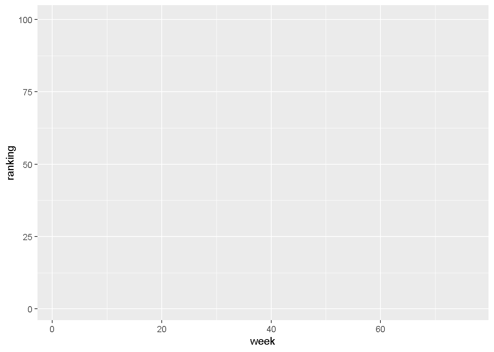
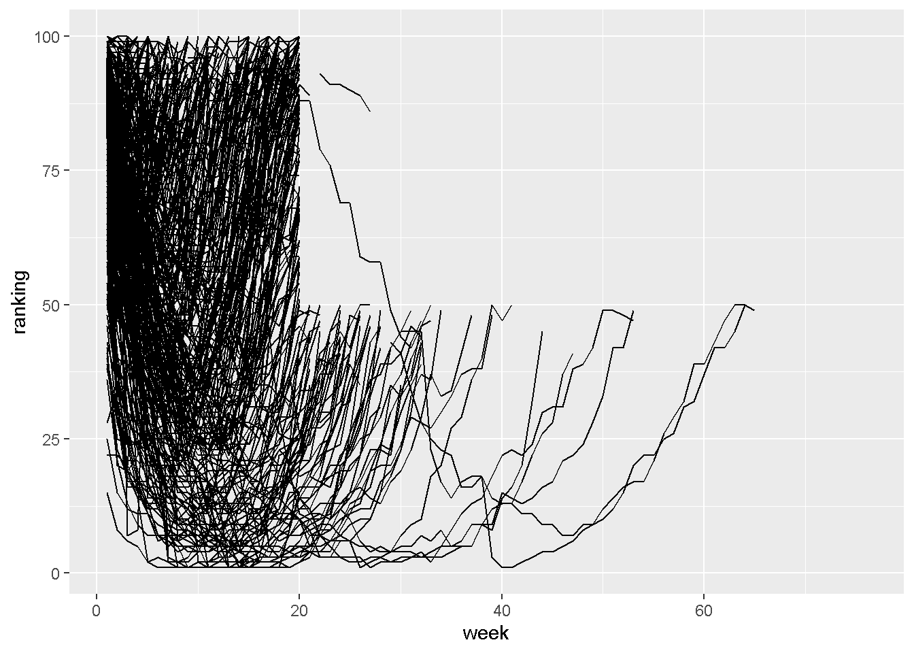
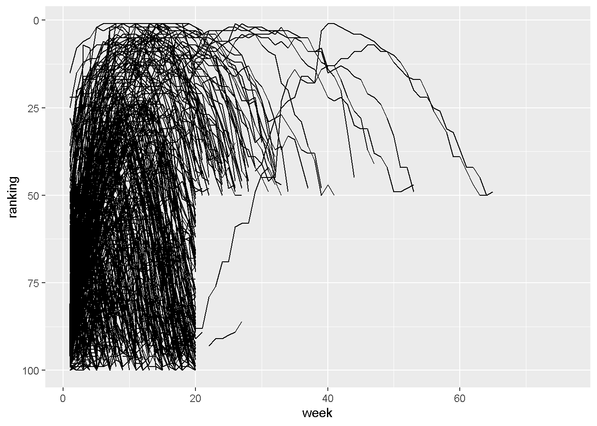
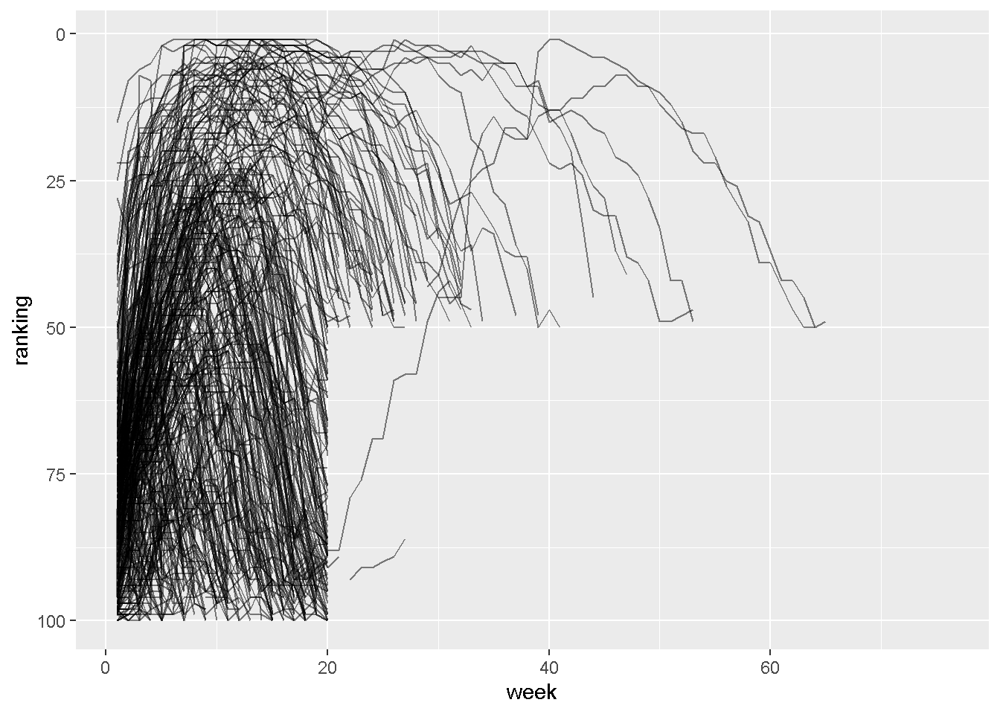
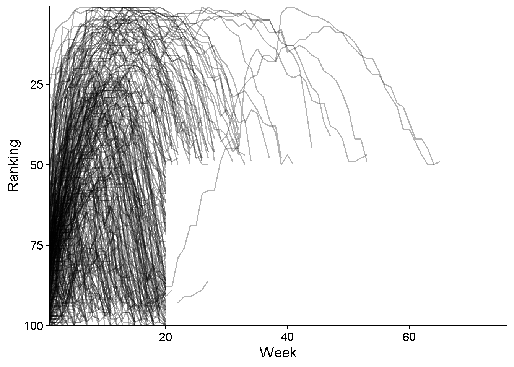

For each question, please make sure you include code output. If the question asks for comparison or further explanation, please make sure to include that as well.
Setting Up
1) Rename this assignment as “Lab 6 Assignment [Last, First].Rmd”
2) Check and set (if needed) your working directory. If you’d like to load packages with library(), please do so in this block. Make sure to load the tidyverse package!
library(tidyverse)
── Attaching core tidyverse packages ──────────────────────── tidyverse 2.0.0 ──
✔ dplyr 1.1.4 ✔ readr 2.1.5
✔ forcats 1.0.0 ✔ stringr 1.5.1
✔ ggplot2 4.0.0 ✔ tibble 3.2.1
✔ lubridate 1.9.3 ✔ tidyr 1.3.1
✔ purrr 1.0.2
── Conflicts ────────────────────────────────────────── tidyverse_conflicts() ──
✖ dplyr::filter() masks stats::filter()
✖ dplyr::lag() masks stats::lag()
ℹ Use the conflicted package (<http://conflicted.r-lib.org/>) to force all conflicts to become errors
library(palmerpenguins)here::here()
[1] "C:/Users/jessi/OneDrive - Georgia Institute of Technology/Courses/GTA/PSYC 2020/PSYC 2020L Site"
Import
3) The tidyverse package includes a dataset called billboard that has song rankings for the Billboard Top 100 songs from the year 2000. Use the head() function to display the first six rows. Then, use the names() to look at the column names.
4a) Is the billboards dataset in wide or long format? How can you tell?
Wide! An “observation” here is a ranking in a given week, but all the weeks are in columns. They don’t have to specifically mention that an observation is a ranking in a week, but just something like this.
4b) Using the ? tool on the dataset and / or the output from #3, please describe the contents of this dataset (specificially, an overview of what you can find in the columns) (1–2 sentences).
#?billboards
In this dataset, we can find the artist name, track name, date that the track entered, and rankings for 76 weeks starting in 2000.
4c) Given what you said in #4a, would you want to use the pivot_longer() or pivot_wider() function on this data?
pivot_longer()
5) Using a pipe, let’s do a few things:
Tidy the data as you planned to in #4c,
Mutate the column with the numbered weeks so that it’s just numeric (hint: the parse_number() function will extract numbers from a string. Feel free to review its documentation with ?),
Assign this tidied version to a variable so we can continue using it.
After the pipe, print the first six rows from this tidied version.
billboard_l <- billboard |>pivot_longer(cols =starts_with("wk"),names_to ="week", values_to ="ranking") |>mutate(week =parse_number(week))head(billboard_l)
7a) Now, let’s plot some of this data. Let’s make a line graph that has time (week) on the x-axis and a song’s ranking on the y-axis. Start by using the ggplot() function to make a grid with axes (no geoms yet).
billboard_l |>ggplot(aes(x = week, y = ranking))

7b) Now, let’s add a geom_line() to show the rankings of the different songs over time. Remember you will need to add a group argument to your aes.
billboard_l |>ggplot(aes(x = week, y = ranking, group = track)) +geom_line()
Warning: Removed 18723 rows containing missing values or values outside the scale range
(`geom_line()`).

7c) Because higher is “worse” for rankings, let’s reverse the y-axis so higher on the y is “better” by adding a scale layer. The function scale_y_reverse() will do this for us! Add it on to your plot just like you would add a new layer.
billboard_l |>ggplot(aes(x = week, y = ranking, group = track)) +geom_line() +scale_y_reverse()
Warning: Removed 18723 rows containing missing values or values outside the scale range
(`geom_line()`).

7d) Modify the alpha argument within your geom to make it easier to see the patterns.
billboard_l |>ggplot(aes(x = week, y = ranking, group = track)) +geom_line(alpha = .5) +scale_y_reverse()
Warning: Removed 18723 rows containing missing values or values outside the scale range
(`geom_line()`).

7d) Make three more modifications to this plot.
billboard_l |>ggplot(aes(x = week, y = ranking, group = track)) +geom_line(alpha = .3) +scale_y_reverse() +coord_cartesian(expand = F) +labs(x ="Week", y ="Ranking") +theme_classic(base_size =14)
Warning: Removed 18723 rows containing missing values or values outside the scale range
(`geom_line()`).

7e) Describe what you see in this plot (1–2 sentences).
Song rankings seem to increase and then fall soon after.